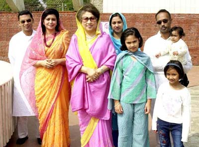

বেগম খালেদা জিয়ার সংক্ষিপ্ত জীবনী

১৫ আগস্ট, ১৯৪৫। পৃথিবীর আকাশে তখন দ্বিতীয় বিশ্বযুদ্ধের ভয়াবহতম কালো মেঘ কেটে শান্তির নতুন সূর্য উঠেছে। সেই সময়প্রবাহে ভারতবর্ষের আকাশেও একটি শান্তির পায়রার আগমন ঘটে। শরতের স্নিগ্ধ ভোরে জলপাইগুড়ি জেলা শহরের নয়াবস্তির এক আভিজাত্যে ভরা শান্তির নীড় - মুজমদার পরিবারে - একটি লাল টুক- টুকে, দুধে-আলতা রঙের রাজকন্যার জন্ম হয়। রাজকন্যাটির নাম খালেদা খানম। ডাক নাম ‘পুতুল’। সেদিনের খালেদা খানম আজকের বাংলাদেশ জাতীয়তাবাদী দল বিএনপির সম্মানিত চেয়ারপার্সন বেগম খালেদা জিয়া। তিনি বাংলাদেশের তিনবারের সফল প্রধানমন্ত্রী এবং বাংলাদেশের প্রথম ও মুসলিম বিশ্বের দ্বিতীয় মহিলা প্রধানমন্ত্রী ছিলেন।
বিশ্বযুদ্ধের ধ্বংসস্তূপের উপর শান্তির পতাকা হাতে আবির্ভূত হওয়া শিশুটি যে বড় হয়ে বাংলাদেশের ১৬ কোটি মানুষের মুক্তির প্রতীক হয়ে উঠবেন সেটা বোঝা গিয়েছিল শৈশবেই। সে কারণে বাবার বন্ধু ডাক্তার অবনী গুহ নিয়োগি শান্তির আবাহনের প্রতীক হিসেবে খালেদা জিয়ার আরেক নাম দিয়েছিলেন ‘শান্তি’।
বাবা জনাব এস্কান্দার মজুমদার ও মা বেগম তৈয়বা মুজমদারের ঔরসে জন্ম নেয়া খালেদা জিয়া মাতৃ এবং পিতৃকূলের দিক থেকে চারটি বিখ্যাত সংস্কৃতিবান পরিবারের উত্তরসূরি। পিতৃকূলের দিক থেকে বেগম খালেদা জিয়া আরব বংশোদ্ভূত। তার পূর্ব পুরুষরা ইয়েমেন থেকে ইসলাম প্রচারের জন্য এদেশে এসেছিলেন। খালেদা জিয়ার দাদা হাজী সালামত আলী ছিলেন অত্যন্ত ধার্মিক, দানশীল ও দরবেশ মানুষ। আর তাঁর মাতৃকূলের পূর্ব পুরুষ মুহাম্মদ দানিয়েল ছিলেন বাংলার সুবাদার মীর জুমলার বংশধর।
খালেদা জিয়ার বয়স যখন দুই বছর তখন ৪৭-এর দেশবিভাগের তোড়জোড় চলছে। জলপাইগুড়িতে সাম্প্রদায়িক দাঙ্গায় মুসলমানরাই তখন সবচেয়ে বেশি ক্ষতিগ্রস্থ হচ্ছিলো। ফলে
খালেদা জিয়ার বাবা এস্কান্দার মজুমদার সপরিবারে জলপাইগুড়ি থেকে দিনাজপুরে চলে আসেন। মুসলমানদের পৃথক আবাসস্থল ও নবীন রাষ্ট্র হিসেবে পূর্ব পাকিস্তানের পরিবেশ ছিল তখন চমৎকার। দিনাজপুরে কাটে তাঁর স্মৃতিময় শৈশব ও সোনালি কৈশোর। মাত্র ৪ বছর বয়সে রোযা রাখেন খালেদা জিয়া। মায়ের সাথে নামায পড়েন তখন থেকেই। পাঁচ বছর বয়সে দিনাজপুরের মিশন স্কুল থেকে খালেদা জিয়ার শিক্ষাজীবন শুরু হয়। ছোট বেলা থেকেই খালেদা জিয়া খুব পরিপাটি ও গোছানো স্বভাবের ছিলেন। খুব কম কথা বলতেন। ফুল ছিল তাঁর খুব প্রিয়। ঘর পরিষ্কার-পরিচ্ছন্ন করা এবং সাজিয়ে রাখা ছিল তার ভীষণ পছন্দ।
তিন বোন এবং দুই ভাইয়ের মধ্যে খালেদা জিয়া ছিলেন তৃতীয়। তাঁর জীবনসঙ্গী বাংলাদেশের প্রথম ও ৭ম রাষ্ট্রপতি ও স্বাধীনতার ঘোষক লেফটেন্যান্ট জেনারেল জিয়াউর রহমান বীরউত্তম। কলেজে পড়া অবস্থায় ১৯৬০ সালের আগস্ট মাসে মুদিপাড়ার বাসায় জিয়াউর রহমান ও খালেদা জিয়ার বিয়ে হয়। তাদের বড় ছেলে বিএনপির সিনিয়র ভাইস চেয়ারম্যান তারেক রহমান ও ছোট ছেলে সদ্য প্রয়াত আরাফাত রহমান কোকো।
গম্ভীর, পরিপাটি ও উজ্জ্বল বুদ্ধিদীপ্তে ভরপুর খালেদা জিয়া শুধু পূর্ণিমার চাঁদই ছিলেন না তিনি ছিলেন দৃঢ় মনোবলসম্পন্না একজন সংসারী নারী। জিয়াউর রহমানের চ্যালেঞ্জিং সৈনিক জীবনে সবসময় সাহসী জীবনসঙ্গিনী হিসেবে পাশে ছিলেন। ৭১- সালের ২৫ মার্চ শেখ মুজিব স্বাধীনতাযুদ্ধের ঘোষণা না দিয়ে পাকিস্তানের সাথে আঁতাত করে স্বেচ্ছায় কারাবরণের নামে পালিয়ে গেলে দিশেহারা জাতিকে রক্ষার দায়িত্ব নেন বাংলাদেশের স্থপতি লেফটেন্যান্ট জেনারেল জিয়াউর রহমান। বাংলাদেশের প্রথম রাষ্ট্রপতি হিসেবে স্বাধীনতার ঘোষণা দিয়ে ঐক্যবদ্ধভাবে পাকিস্তানি বর্বর হানাদারদের বিরুদ্ধে ঝাঁপিয়ে পড়েন এবং যুদ্ধের নেতৃত্ব দেন। আর সেই ক্ষোভ থেকে পাক সেনারা ২ জুলাই সিদ্ধেশরীতে জনাব এস আব্দুল্লাহর বাসা থেকে খালেদা জিয়াকে দুই ছেলে সহ বন্দী করে। ১৯৭১ সালের ১৫ ডিসেম্বর পর্যন্ত তিনি ঢাকা ক্যান্টনমেন্টে বন্দী ছিলেন। ১৬ ডিসেম্বর বাংলাদেশ স্বাধীন হলে তিনি মুক্তি পান। নারী মুক্তিযোদ্ধা ও দেশরক্ষার অগ্রসেনানী হিসেবে খালেদা জিয়া ইতিহাসে অমলিন হয়ে থাকবেন চিরকাল।
 সূচীপত্র
সূচীপত্র